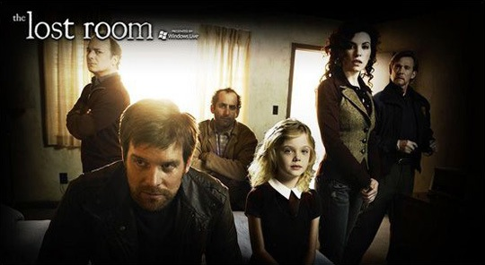

 看了两集Eureka，没心思再看下去，就去豆瓣上连啊连，连到了《The Lost Room》，中文名叫《迷之屋》。看简介是喜欢的科幻题材，还占据了Sci Fi Channel黄金时段的广告席位，而且还是只有6集的迷你剧，很符合我的耐力，花了两天的时间下载，花了一晚上看完。至少这是一部让我能一口气看完，看得过程中也一直想追着看的美剧，印象中也只有前几季的24小时和第一季的越狱和迷失有此神力了。影片的题材并不算新鲜。一些人因为一些事而产生了特殊的能力，我们称之为Xman。而这部剧里，Xman变成了Xthing，拥有这些Xthing，普通人就可以拥有超能力。 六十年代，从洛杉矶到旧金山的66号公路上已经出现了100多家汽车旅馆，其中有一家阳光旅馆，在几十年前发生了一起未知事件，10号房间和现实之间产生了裂缝，房间里普通的东西也因此变成神奇的具有超能力的道具。影片从警察局调查一宗罪案时发现的一把钥匙开始。这把钥匙可以打开任意一扇门，来到阳光旅馆10号房间。但如果你不幸遗失了一件物品在10号房间内，当你想再次打开这扇门取回物品时，物品却已经消失了。有人计划收集这个房间的所有物体，为了得到无穷的力量，他们认为这些物体可以满足他们，另外一些人则禁止任何人再次使用这些物体。虽然他们的目的不同，不过他们的战术相似。使用任何一个物体都需要付出身体上的，情感上的或者心理上的代价。只要你拥有了其中一件物体，你就会变成被猎杀的对象。当男主角的小女儿用钥匙打开门，在房间中走失的时候，他的生活立刻彻底的发生了变化。为了救回自己的女儿，乔成了一股邪恶力量的目标，它会不惜一切代价夺走乔拯救女儿的希望——通向10号房间的钥匙。 与我们一般认识上的不同在于，片中具有神奇超能力的道具物件并非通常意义上的超能力道具，从外观上你根本无法判断它的不同，它们就是存在于我们身边的无数个小物件，闹钟、眼镜、剪刀、梳子、自动铅笔、小刀、车票、钥匙。。。每件物品却都有着意想不到的能力：剪刀可以旋转并且使3尺以内的东西旋转；当你用梳子梳头的时候可以停止时间10秒中；眼镜可以停止20英尺以内的燃烧；车票可以瞬间带你到新墨西哥州一个未知的地方；自动铅笔可以让天上掉硬币；小刀可以让人麻醉；手表可以用来煮鸡蛋。。。当然能力有大有小，有些需要搭配使用才能发挥出特定的能力。这很像玩游戏。游戏里的道具也是非常重要的，首先，你要想方设法取得道具，但同时，道具本身会有一些不同的伤害力，你需要另想方法避免，或者将伤害减到最小。你还需要注意不同道具之间的搭配使用，来增强自身的能力。或许在特定的游戏规则下，发现并认识，然后搭配使用新的物件才是这部片子最吸引人的地方。 作为一部科幻迷你剧，编剧已经将阐释的成分做到最好了，你不能期望科幻片都完全能自圆其说，毕竟它更多的还是想像力的产物。短短6集，结构紧凑，物件的发现也是层层深入，总能给人带来不小的惊喜，也能感慨于男主人公的机智。影片场所设定在汽车旅馆，也在很大程度上增加了它的神秘性和故事性。关于汽车旅馆，我们知道，很多故事都是在那儿发生的。 看完6集，感觉还有好多的未解之谜，只希望什么时候这部短剧能拍成Series，能让人再一次酣畅淋漓地看下去。但也不一定，也许正是遗留的谜题才让你永远记得它的存在。 Some doors are better left closed.